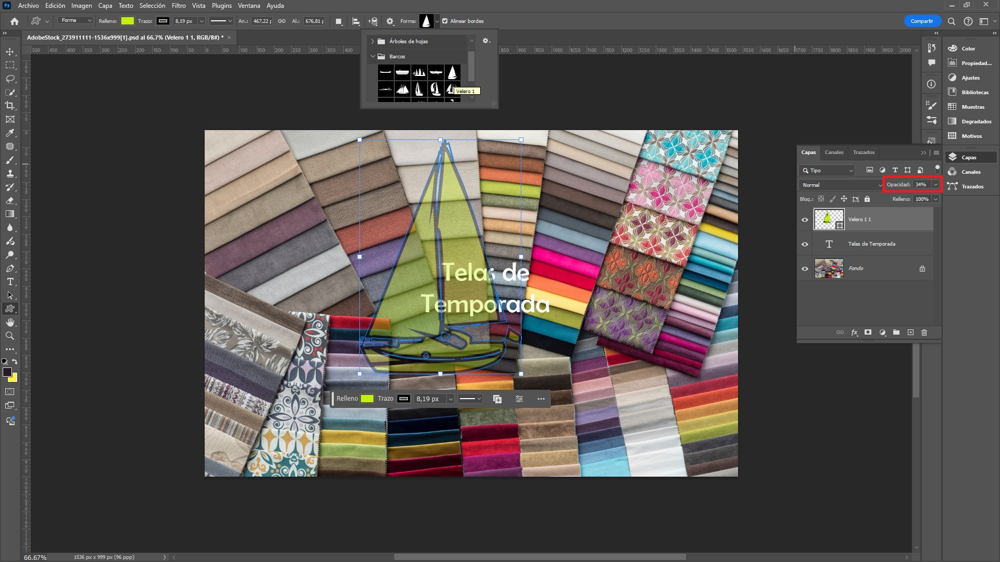
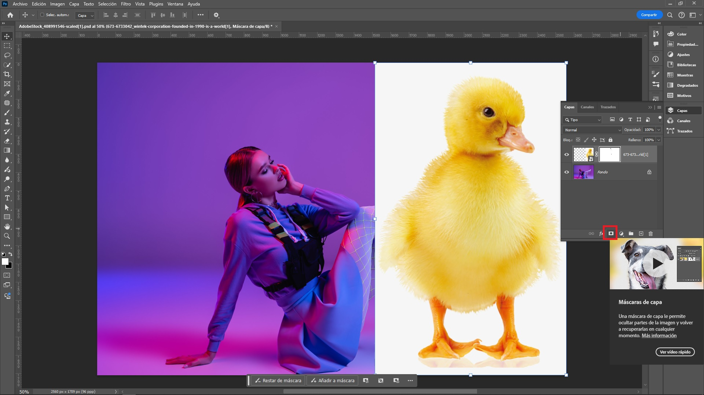
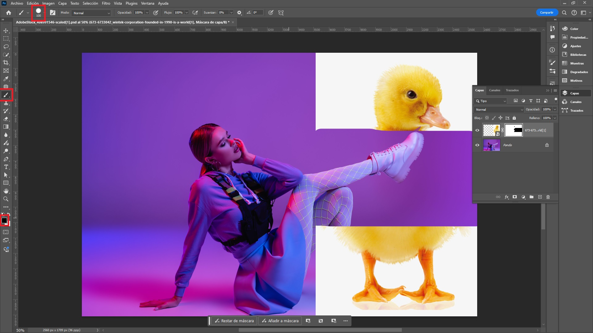
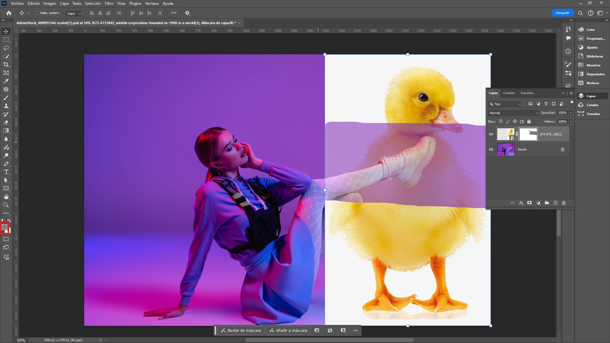
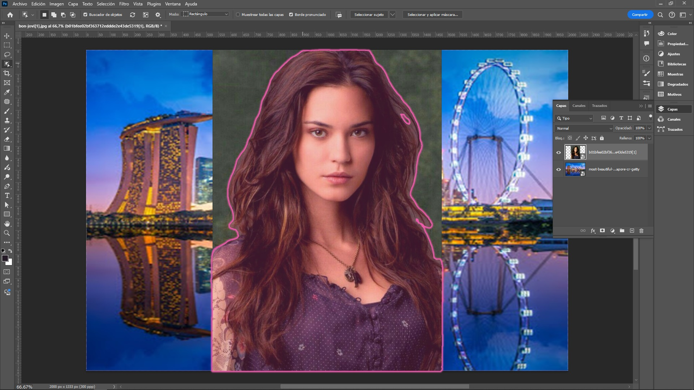
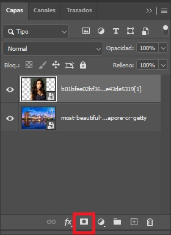
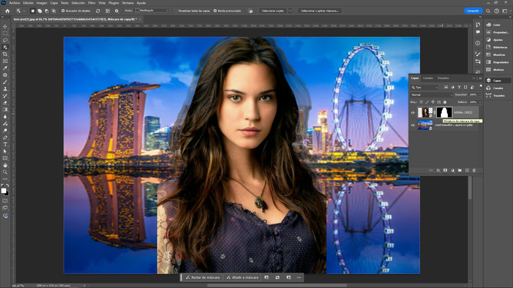

Formas y Capas
Adobe Photoshop permite a los diseñadores y fotógrafos trabajar de manera eficiente mediante formas y capas, dos herramientas esenciales que facilitan la creación de proyectos visuales complejos.
Formas en Photoshop: Las formas son objetos vectoriales que pueden ser creados, modificados y escalados sin perder calidad. Las formas comunes incluyen rectángulos, elipses y líneas, permitiendo diseñar gráficos precisos para interfaces web o impresiones de alta resolución.
Capas en Photoshop: Las capas son fundamentales para organizar elementos gráficos. Cada elemento, desde una imagen hasta un texto, se coloca en una capa individual, lo que facilita la edición no destructiva. Las capas pueden reordenarse, combinarse o modificarse usando máscaras o modos de fusión.
Estilos de Capa
Los estilos de capa en Photoshop son efectos predefinidos que se aplican a las capas para mejorar su apariencia de forma no destructiva. Permiten añadir sombras, brillos, texturas y otros efectos visuales sin modificar permanentemente el contenido de la capa. Estos efectos son totalmente personalizables y ayudan a crear un aspecto más atractivo o profesional en los diseños.
Como ingresar al menú de estilos de capa:
A continuación se describen los principales estilos de capa en Photoshop y sus efectos:
Sombra Paralela (Drop Shadow)
Agrega una sombra detrás del objeto o texto de la capa, simulando la proyección de luz.
Se agregará una sombra el triángulo.
Se tiene las siguientes opciones ajustables: ángulo de la luz, opacidad, distancia, tamaño y extensión de la sombra.
Resultado:
Sombra Interior (Inner Shadow)
Es similar a la sombra paralela, pero la sombra se proyecta hacia dentro de la capa, creando un efecto de profundidad o hueco.
Se tiene las siguientes opciones ajustables: ángulo, opacidad, tamaño, distancia y extensión.
Resplandor Exterior (Outer Glow)
Aplica un resplandor suave alrededor del objeto de la capa, que puede ser de color sólido o degradado.
Se tiene las siguientes opciones ajustables: color, opacidad, tamaño y rango del resplandor.
Resplandor interior (Inner Glow)
Similar al resplandor exterior, pero aplicado dentro de la capa, generando un brillo que parece emanar del interior del objeto.
Se tiene las siguientes opciones ajustables: color, opacidad, tamaño y rango.
Bisel y Relieve (Bevel and Emboss)
Crea un efecto tridimensional que da la apariencia de relieve o de que el objeto está elevado. Hay varios tipos de biselado (interior, exterior, trazo).
Se tiene las siguientes opciones ajustables: profundidad, tamaño, suavidad, ángulo de luz y altitud.
Satinado (Satin)
Añade un efecto de sombreado que simula la luz reflejada sobre una superficie brillante, creando un aspecto satinado o metálico.

Se tiene las siguientes opciones ajustables: ángulo, distancia, tamaño, opacidad y color.

Trazo (Stroke)
Añade un borde o contorno alrededor del objeto de la capa, que puede ser de color sólido, degradado o motivo.
Se tiene las siguientes opciones ajustables: color, tamaño, posición, opacidad y tipo de relleno.
Superposición de Color (Color Overlay)
Rellena la capa con un color sólido o degradado, que puede ser mezclado con el contenido original de la capa a través de modos de fusión.
Se tiene las siguientes opciones ajustables: color, opacidad y modo de fusión.
Superposición de degradado (Gradient Overlay)
Permite rellenar la capa con un degradado de colores. Es útil para crear efectos de transición suave o añadir profundidad.
Se tiene las siguientes opciones ajustables: tipo de degradado, opacidad, ángulo, escala y modo de fusión.
Superposición de motivo (Pattern Overlay)
Permite aplicar un patrón o textura predefinido sobre la capa. Los patrones pueden personalizarse y repetirse según sea necesario.
Se tiene las siguientes opciones ajustables: patrón, escala, opacidad y modo de fusión.
Crear una Forma Gráfica
En Photoshop, las herramientas de formas geométricas permiten crear fácilmente figuras como rectángulos, elipses, polígonos y líneas. Estas herramientas son útiles para crear elementos gráficos básicos que pueden ser usados en diseños o ilustraciones.
Las principales herramientas de formas geométricas en Photoshop son:
- Herramienta Rectángulo (U): Crea rectángulos o cuadrados. Si se mantiene presionada la tecla Shift mientras se dibuja, se generará un cuadrado perfecto.
- Herramienta Elipse (U): Sirve para crear elipses o círculos perfectos (con Shift).
- Herramienta Polígono (U): Permite crear polígonos de cualquier cantidad de lados. Se puede ajustar el número de lados en las opciones de la barra superior.
- Herramienta Línea (U): Traza líneas rectas. En las opciones, se puede especificar el grosor de la línea.
- Herramienta Forma Personalizada (U): Ofrece una variedad de formas prediseñadas que se pueden seleccionar desde una lista o importar.

Cada una de estas herramientas ofrece opciones adicionales en la barra de opciones superior, como modificar el color de relleno, el trazo, el grosor, y más, permitiendo personalizar las formas de acuerdo a las necesidades del proyecto.
Herramienta de Rectángulo
La herramienta Rectángulo en Photoshop es una de las herramientas de formas geométricas que permite crear rectángulos y cuadrados en capas separadas o directamente sobre la imagen. Esta herramienta se encuentra en la barra de herramientas y es útil para crear elementos de diseño, como marcos, botones, contenedores de texto, o formas decorativas.
Cuando se selecciona la herramienta Rectángulo, se puede dibujar un rectángulo o cuadrado manteniendo presionada la tecla Shift para crear un cuadrado perfecto. Además, en la barra de opciones superior, se puede personalizar el trazo, el color de relleno y el grosor del borde.
Algunas características adicionales incluyen:
- Capas de forma: Cuando se crea un rectángulo, se genera una capa de forma editable que permite cambiar dimensiones, colores y estilo en cualquier momento.
- Radio de esquinas: Se puede ajustar el radio de las esquinas para crear rectángulos con bordes redondeados.
- Transformación y ajustes: El rectángulo se puede escalar, rotar o distorsionar utilizando las herramientas de transformación.
Herramienta de Elipse
La herramienta Elipse en Photoshop es una de las formas que se pueden crear dentro del programa mediante la herramienta de Formas. Se encuentra en el mismo grupo que otras formas básicas, como el rectángulo, la línea y el polígono.
Cuando se selecciona la herramienta Elipse, se puede dibujar un círculo manteniendo presionada la tecla Shift. Además, en la barra de opciones superior, se puede personalizar el trazo, el color de relleno y el grosor del borde.
Funciones y usos principales:
- Creación de círculos y elipses: Al seleccionar esta herramienta, el usuario puede dibujar una elipse o un círculo (si se mantiene presionada la tecla Shift mientras se arrastra, la elipse se transforma en un círculo perfecto).
- Diseño vectorial: Las formas creadas con la herramienta elipse son vectores, lo que significa que pueden escalarse sin perder calidad.
- Estilos de capas: Se le pueden aplicar estilos como trazos, rellenos de color sólido, degradados, sombras, entre otros, para personalizar el aspecto de la elipse.
- Modificación sencilla: Una vez dibujada la elipse, es posible editar su tamaño, color y otras propiedades directamente desde las opciones de forma o la barra de herramientas superior.
- Uso en selecciones: Las formas elípticas también pueden usarse como selecciones si se combina con la herramienta de selección elíptica.
La herramienta elipse se utiliza comúnmente en el diseño gráfico, la creación de logotipos y en cualquier situación donde se necesiten formas curvas o circulares dentro de un proyecto.
Herramienta Triángulo
La herramienta Triángulo en Photoshop es parte del conjunto de formas personalizadas que se encuentran dentro de la herramienta Formas. Esta herramienta permite dibujar triángulos de manera precisa en diferentes orientaciones y tamaños.
Cuando se selecciona la herramienta Triángulo, se puede dibujar un triángulo equilátero presionando la tecla Shift. Además, en la barra de opciones superior, se puede personalizar el trazo, el color de relleno y el grosor del borde.
Herramienta Polígono
La Herramienta de Polígono en Adobe Photoshop permite crear formas poligonales personalizadas. Es útil para diseñar polígonos con diferentes números de lados, como triángulos, pentágonos, hexágonos, etc. Aquí se detallan algunas de sus características:
- Acceso: Se encuentra en la barra de herramientas, generalmente oculta bajo la herramienta de forma personalizada (U). Al seleccionarla, se puede definir el número de lados del polígono en la barra de opciones superior.
- Número de lados: El usuario puede definir cuántos lados tendrá el polígono. Photoshop permite ajustar este parámetro en la barra de opciones superior.
- Estilo de trazado: El usuario puede optar por crear el polígono como un trazado (path), una forma (shape) o píxeles (pixels), lo que depende de si desea editar la forma como vector, trabajar con ella en un lienzo de píxeles o simplemente utilizar el trazado como guía.
-
Otras configuraciones:
- Suavizar esquinas: Se puede redondear las esquinas del polígono.
- Estrella: Existe la opción de convertir el polígono en una estrella ajustando la profundidad de los vértices.
Herramienta Línea
La herramienta Línea en Photoshop es una herramienta de dibujo que permite crear líneas rectas de diferentes grosores y longitudes. Aunque puede parecer básica, es muy útil para tareas de diseño que requieren precisión, como diagramas, líneas divisorias o elementos geométricos. Se encuentra en el grupo de herramientas de forma, junto a otras herramientas como el rectángulo y el círculo.
Características clave:
- Forma personalizable: Al dibujar una línea, el usuario puede ajustar su grosor, longitud y el color del trazo.
- Puntas de flecha: Se puede añadir una o dos puntas de flecha al inicio o final de la línea, lo cual es útil en diagramas o indicaciones.
- Opciones de estilo: La línea puede ser continua o tener un estilo especial, como líneas discontinuas o punteadas.
- Uso de capas: Cada línea se crea en una nueva capa, permitiendo mayor flexibilidad para moverla o editarla sin afectar otros elementos del proyecto.
- Vectorial o rasterizada: La línea puede ser una forma vectorial (que se puede redimensionar sin perder calidad) o una imagen rasterizada.
Agregar una Forma Personalizada
La herramienta Forma Personalizada en Photoshop permite al usuario crear y utilizar una variedad de formas vectoriales predefinidas o personalizadas. Estas formas se pueden usar para añadir elementos gráficos como íconos, diseños o patrones dentro de un proyecto. A continuación se detallan sus características principales:
- Acceso a la herramienta: Se encuentra en la barra de herramientas, generalmente oculta debajo de la herramienta de formas básicas como el rectángulo o el elipse. Se puede acceder haciendo clic prolongado sobre una de esas herramientas y seleccionando "Forma personalizada".
-
Usar formas predefinidas:
Photoshop incluye un conjunto de formas predefinidas
(flechas, estrellas, burbujas de diálogo, etc.) que pueden
seleccionarse desde el menú de formas en la
barra de opciones
superior. También es posible cargar más formas
personalizadas descargadas de otras fuentes o creadas por
el propio usuario.
Se puede cambiar por ejemplo la opacidad de la capa, con el fin de que la figura sea semitransparente.
- Creación de formas vectoriales: Las formas creadas son vectores, lo que significa que pueden escalarse sin perder calidad. Son muy útiles para crear logotipos, íconos o gráficos que deban mantener su nitidez a cualquier tamaño.
- Personalización: Las formas se pueden personalizar alterando sus propiedades, como el color de relleno, el trazo, el grosor del borde o aplicando efectos como sombras, biseles o texturas.
- Usos creativos: Esta herramienta es ideal para diseñadores gráficos que buscan elementos gráficos reutilizables, así como para proyectos en los que se requiere la creación rápida de gráficos vectoriales o diseño de interfaces.
Con la Herramienta Forma Personalizada, el usuario puede maximizar la eficiencia y creatividad en el diseño gráfico, incorporando rápidamente elementos visuales predefinidos o únicos a sus composiciones.
Herramienta Selección de Trazado
la Herramienta Selección de Trazado (A) en Photoshop es una herramienta utilizada para trabajar con trazados y formas vectoriales. Esta herramienta permite seleccionar trazados creados con la herramienta Pluma o cualquier otro método que genere trazados en el programa con el fin de cambiarles de posición.
Herramienta Selección Directa
La Herramienta Selección Directa en Photoshop es una herramienta utilizada principalmente para seleccionar y editar formas y trazados vectoriales. Esta herramienta permite manipular los puntos de anclaje y las líneas que componen un trazado, lo que brinda un control preciso sobre la forma y el diseño.
Funciones y usos de la Herramienta Selección Directa:
- Selección de Puntos de Anclaje: Permite seleccionar y mover puntos de anclaje individuales dentro de una forma o trazado, lo que facilita la modificación de la geometría del objeto.
- Modificación de Trazados: Se puede utilizar para ajustar la curvatura y la longitud de las líneas que conectan los puntos de anclaje, permitiendo la creación de formas más complejas y personalizadas.
- Ajuste de Curvas: Al seleccionar un punto de anclaje y sus controladores, se pueden ajustar las curvas del trazado, lo que ayuda a perfeccionar el diseño.
- Facilidad de Edición: Facilita la edición de gráficos vectoriales, lo que resulta útil en el diseño de logotipos, ilustraciones y cualquier otro elemento gráfico que requiera precisión.
- Combinación con Otras Herramientas: A menudo se utiliza junto con otras herramientas de dibujo y edición, como la herramienta de Pluma, para mejorar la experiencia de diseño y proporcionar más opciones de personalización.
Como se puede ver en la figura anterior con la Herramienta Selección Directa se ha editado algunas anclas para cambiar la forma de la velas del velero.
Modos de Fusión (Blending Modes)
Los modos de fusión (blending modes) en Photoshop son una función esencial que permite combinar capas de diferentes maneras, alterando cómo interactúan entre sí los colores y las luminosidades. Cada modo de fusión aplica una fórmula matemática que determina el resultado visual de la capa superior en relación con la capa inferior.
Tipos de Modos de Fusión
-
Modos de fusión normales:
- Normal: Aplica la capa superior sin ninguna fusión, manteniendo los colores originales.
- Disolver: Mezcla la capa superior con la inferior, pero con una variación aleatoria que puede resultar en la desaparición de algunos píxeles.
-
Modos de fusión oscurecer:
- Multiplicar: Busca la información de color de cada canal y multiplica el color base por el color de fusión. El color resultante siempre es un color más oscuro. Multiplicar cualquier color por negro produce negro. Multiplicar cualquier color por blanco no cambia el color. Si está pintando con un color distinto del blanco o el negro, los sucesivos trazos con una herramienta de pintura producen colores cada vez más oscuros. El efecto es similar a dibujar en la imagen con diferentes marcadores mág. Ideal para sombras.
- Oscurecer: Busca la información de color de cada canal y selecciona el color base o el de fusión, el que sea más oscuro, como color resultante. Los píxeles más claros que el color de fusión se reemplazarán y los más oscuros no cambiarán.
- Color Burn: Aumenta el contraste de la capa superior, quemando los colores y haciendo que se oscurezcan más.
- Subexponer color: Busca la información de color de cada canal y oscurece el color base para reflejar el color de fusión mediante el aumento del contraste entre ambos. Fusionar con blanco no produce cambios.
- Subexposición lineal: Busca la información de color de cada canal y oscurece el color base para reflejar el color de fusión disminuyendo el brillo. Fusionar con blanco no produce cambios.
- Color más oscuro: Compara el total de los valores de todos los canales tanto para el color fusionado como para el color base y muestra el color cuyo valor sea más bajo. El modo Color más oscuro no produce ningún otro color distinto que pueda ser el resultado de la fusión Oscurecer ya que selecciona los valores de canal más bajos tanto del color fusionado como del color base para crear el color resultante.
-
Modos de fusión aclarar:
- Aclarar: Busca la información de color de cada canal y selecciona el color base o el de fusión, el que sea más claro, como color resultante. Los píxeles más oscuros que el color de fusión se reemplazarán y los más claros no cambiarán.
- Trama: Busca la información de color de cada canal y multiplica los colores contrarios al color base y al de fusión. El color resultante siempre es un color más claro. Tramar con negro no cambia el color. Tramar con blanco genera blanco. El efecto es similar al que se obtiene al proyectar varias diapositivas una encima de otra.
- Sobreexponer color: Busca la información de color de cada canal e ilumina el color base para reflejar el color de fusión mediante la disminución del contraste entre ambos. Fusionar con negro no produce cambios.
- Sobreexposición lineal (Añadir): Busca la información de color de cada canal e ilumina el color base para reflejar el color de fusión aumentando el brillo. Fusionar con negro no produce cambios.
- Color más claro: Compara el total de los valores de todos los canales tanto para el color fusionado como para el color base y muestra el color cuyo valor sea más elevado. El modo Color más claro no produce ningún otro color distinto que pueda ser el resultado de la fusión Aclarar ya que selecciona los valores de canal más altos tanto del color fusionado como del color base para crear el color resultante.
-
Modos de fusión de contraste:
- Superponer: Multiplica o trama los colores, dependiendo del color base. Los motivos o los colores se superponen sobre los píxeles existentes al mismo tiempo que se mantienen las iluminaciones y las sombras del color base. El color de fusión no sustituye al color base, pero sí se mezcla con él para reflejar la luminosidad u oscuridad del color original.
- Luz suave: Oscurece o aclara los colores, dependiendo del color de fusión. El efecto es similar al que se obtiene al iluminar la imagen con un foco difuso. Si el color de fusión (origen de la luz) es más claro que un 50 % de gris, la imagen se aclarará como si estuviera sobreexpuesta. Si el color de fusión es más oscuro que un 50 % de gris, la imagen se oscurecerá como si se quemara. Pintar con colores blancos o negros puros produce un área mucho más oscura o clara, pero no da como resultado blancos o negros puros.
- Luz fuerte: Multiplica o trama los colores, dependiendo del color de fusión. El efecto es similar al que se obtiene al iluminar la imagen con un foco intenso. Si el color de fusión (origen de la luz) es más claro que un 50 % de gris, la imagen se aclarará como si se tramara. Esto resulta útil para añadir iluminaciones a una imagen. Si el color de fusión es más oscuro que un 50 % de gris, la imagen se oscurecerá como si se multiplicara. Esto resulta útil para añadir sombras a una imagen. Pintar con negros o blancos puros genera negros o blancos puros.
- Luz intensa: Subexpone o sobreexpone los colores aumentando o disminuyendo el contraste, dependiendo del color de fusión. Si el color de fusión (origen de la luz) es más claro que un 50 % de gris, la imagen se aclarará disminuyendo el contraste. Si el color de fusión es más oscuro que un 50 % de gris, la imagen se oscurecerá aumentando el contraste.
- Luz lineal: Subexpone o sobreexpone los colores aumentando o disminuyendo el brillo, dependiendo del color de fusión. Si el color de fusión (origen de la luz) es más claro que un 50 % de gris, la imagen se aclarará aumentando el brillo. Si el color de fusión es más oscuro que un 50 % de gris, la imagen se oscurecerá disminuyendo el brillo.
- Luz focal: Reemplaza el color, dependiendo del color de fusión. Si el color de fusión (origen de la luz) es más claro que un 50 % de gris, los píxeles más oscuros que el color de fusión se reemplazarán y los más claros no cambiarán. Si el color de fusión es más oscuro que un 50 % de gris, los píxeles más claros que el color de fusión se reemplazarán y los más oscuros no cambiarán. Esto resulta útil para añadir efectos especiales a una imagen.
- Mezcla definida: Añade los valores de los canales rojo, verde y azul del color de fusión a los valores RGB del color base. Si la suma resultante en algún canal es igual o superior a 255, recibe el valor 255; en cambio, si es inferior a 255, el valor recibido es 0. Por lo tanto, todos los píxeles fusionados cuentan con 0 ó 255 como valores de los canales rojo, verde y azul. Así, todos los píxeles se cambian a los colores aditivos primarios (rojo, verde o azul), blanco o negro.
-
Modos de fusión de efectos especiales:
- Diferencia: Busca la información de color de cada canal y resta el color de fusión del color base, o al contrario, dependiendo de cuál tenga mayor valor de brillo. Fusionar con blanco invierte los valores del color base; fusionar con negro no produce cambios.
- Exclusión: Crea un efecto similar pero más bajo de contraste que el modo Diferencia. Fusionar con blanco invierte los valores del color base. Fusionar con negro no produce cambios.
- Restar: Busca la información de color de cada canal y resta color de fusión al color base. En imágenes de 8 y 16 bits, los valores negativos resultantes se recortan en cero.
- Dividir: Busca la información de color de cada canal y divide el color de fusión del color base.
-
Modo componentes:
- Tono: Crea un color resultante con la luminancia y la saturación del color base y el tono del color de fusión.
- Saturación:Crea un color resultante con la luminancia y el tono del color base y la saturación del color de fusión. Pintar con este modo en un área sin saturación (0) (gris) no provoca cambios.
- Color: Crea un color resultante con la luminancia del color base y el tono y la saturación del color de fusión. Los niveles de gris de la imagen se mantienen y resulta útil para colorear imágenes monocromas y matizar imágenes de color.
- Luminosidad: Crea un color resultante con el tono y la saturación del color base y la luminancia del color de fusión. Este modo crea el efecto contrario al modo Color.
Máscaras de Capa
Las máscaras de capa en Photoshop son una herramienta poderosa que permite ocultar o mostrar partes específicas de una capa sin eliminarlas permanentemente. Es una técnica no destructiva que da flexibilidad al trabajo de edición, especialmente en tareas como el retoque de imágenes, la creación de collages o la corrección de color. Aquí se detalla cómo funcionan y cómo utilizarlas:
¿Qué es una máscara de capa?
Una máscara de capa es una imagen en escala de grises que se aplica a una capa. Las áreas negras en la máscara ocultan partes de la capa, mientras que las áreas blancas las muestran. Las áreas grises permiten transparencias parciales, es decir, el contenido de la capa se ve parcialmente.
¿Cómo agregar una máscara de capa?
- Seleccionar la capa: En el panel de capas, se debe seleccionar la capa a la que se desea agregar la máscara.
-
Añadir la máscara: Hacer clic
en el ícono de "Agregar máscara de capa" en la parte
inferior del panel de capas (parece un rectángulo con un
círculo en el centro).

-
Editar la máscara: Se utiliza
un pincel para ocultar o mostrar partes de la capa.
-
Pencil negro: Las áreas
pintadas con negro se ocultan.

-
Pencil blanco: Las áreas
pintadas con blanco se hacen vivibles.

-
Pencil gris: Las áreas
pintadas con gris toman diversos grados de
transparencia.

-
Pencil negro: Las áreas
pintadas con negro se ocultan.
Reemplazar un Fondo con una Máscara de Capa
Para reemplazar un fondo utilizando una máscara de capa en Photoshop, se pueden seguir estos pasos:
- Abrir la imagen: Importar las imágenes que se desean editar en Photoshop.
-
Seleccionar el sujeto:
- Utilizar la herramienta de selección adecuada según la imagen: Herramienta Selección rápida, Herramienta Varita mágica o Herramienta Selección de objeto(usada en la imagen).
- Asegurarse de que el sujeto está seleccionado de forma precisa.
 -
Crear una máscara de capa:
- Una vez que se tenga la selección, ir al panel de capas.
-
Hacer clic en el botón Añadir máscara de capa (un
rectángulo con un círculo dentro) en la parte inferior
de la ventana de capas. Esto convertirá la selección en
una máscara de capa, ocultando el fondo no deseado.
Resultado:
-
Refinar la máscara de capa:
- Si es necesario, hacer clic en la miniatura de la máscara de capa.
- Seleccionar la opción Seleccionar y aplicar máscara para refinar los bordes, suavizarlos o ajustar la opacidad de la selección. Se pueden utilizar herramientas como Desvanecer bordes o Descontaminar colores para lograr un mejor resultado.
-
Ajustes finales:
- Ajustar la posición y tamaño del nuevo fondo según se desee.
- Retocar la máscara de capa, si es necesario, utilizando un pincel blanco para revelar áreas o un pincel negro para ocultar partes adicionales.